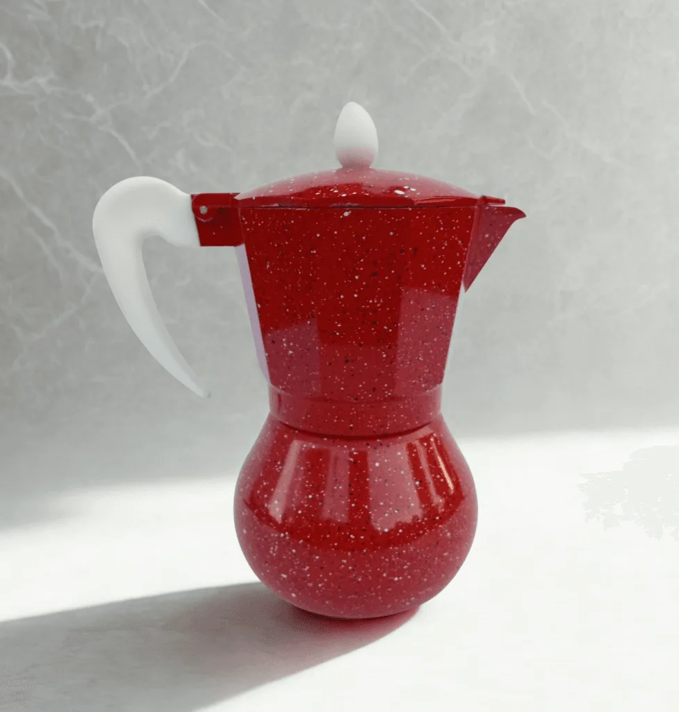
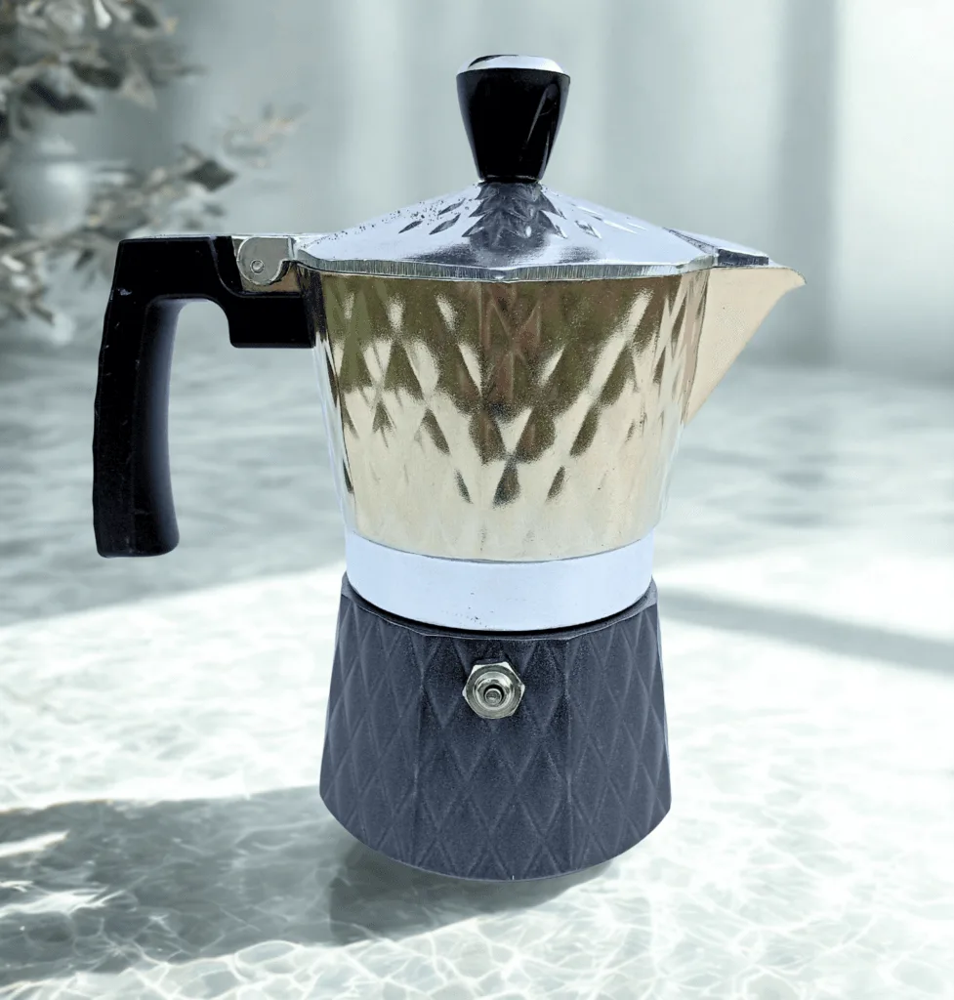

Complementos
Moka
Foto principal y una segunda foto con un detalle útil para decidir la compra.


Comentario para Café Alegra: faltan producto, precio y fotografías de Moka.
Foto principal y una segunda foto con un detalle útil para decidir la compra.


Comentario para Café Alegra: faltan producto, precio y fotografías de Moka.